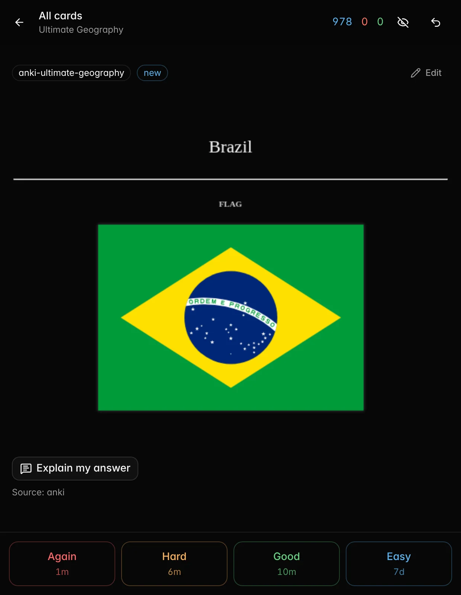
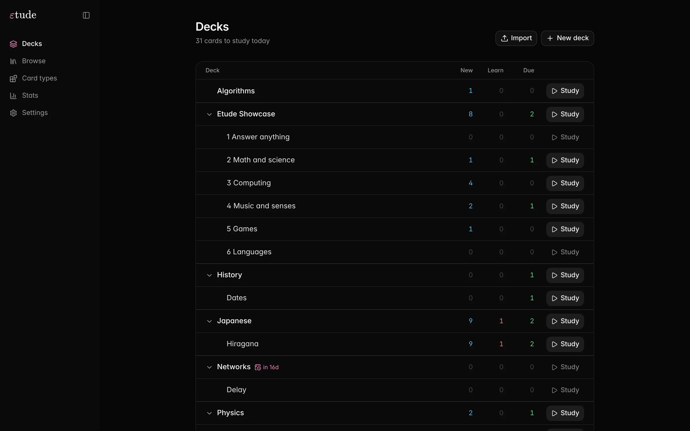
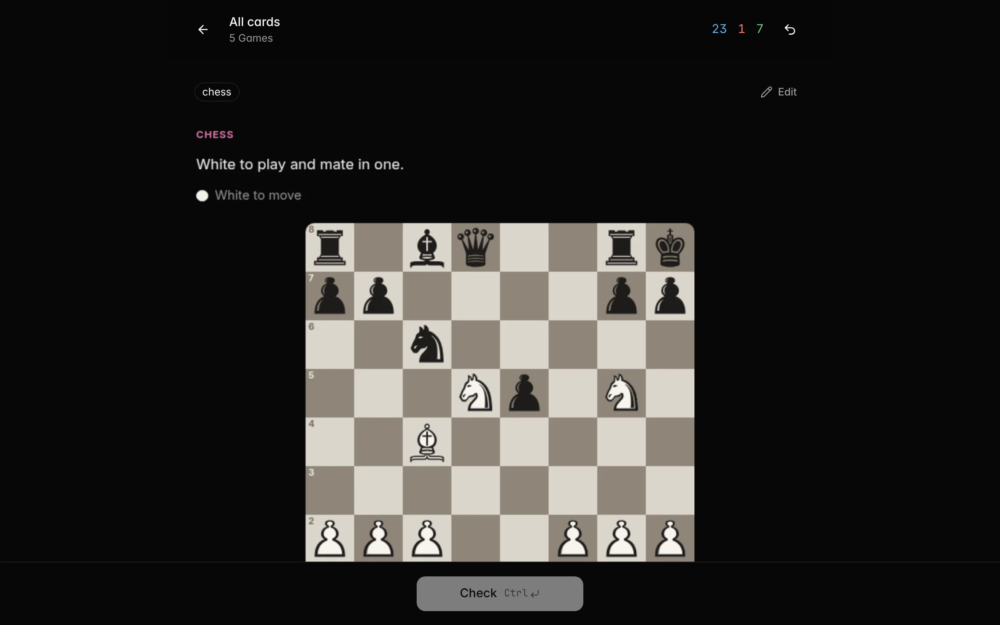
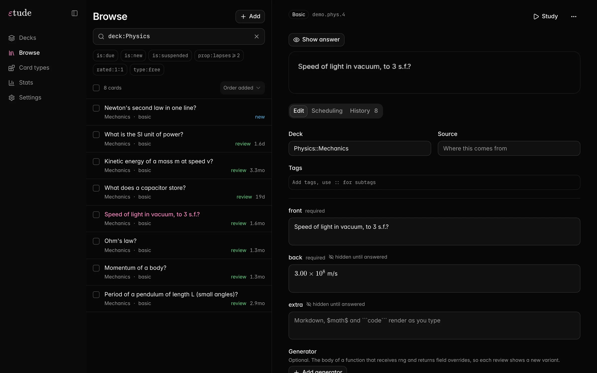
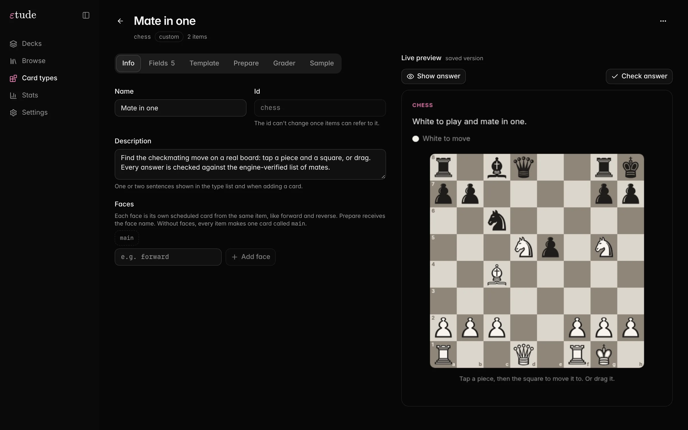
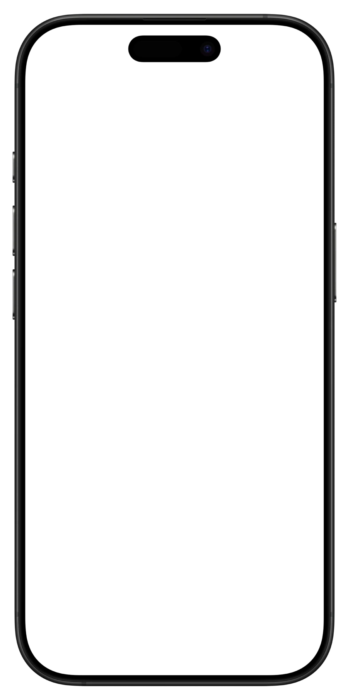
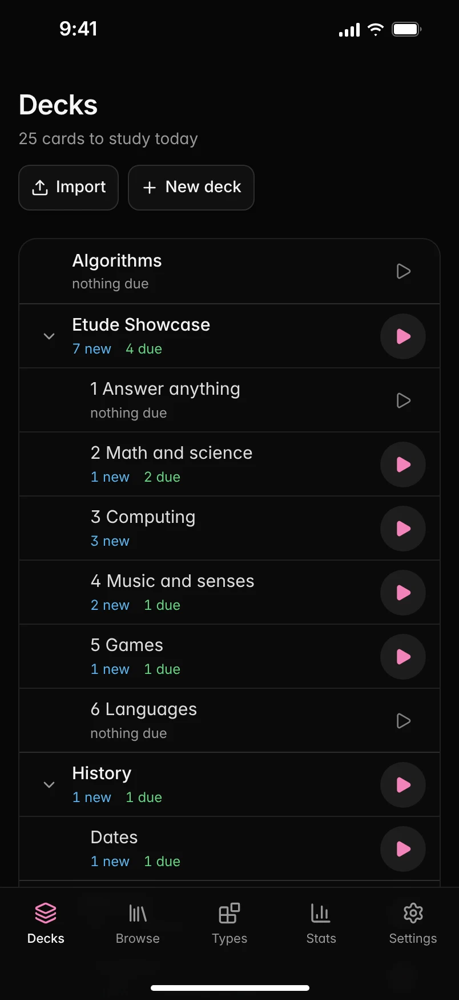
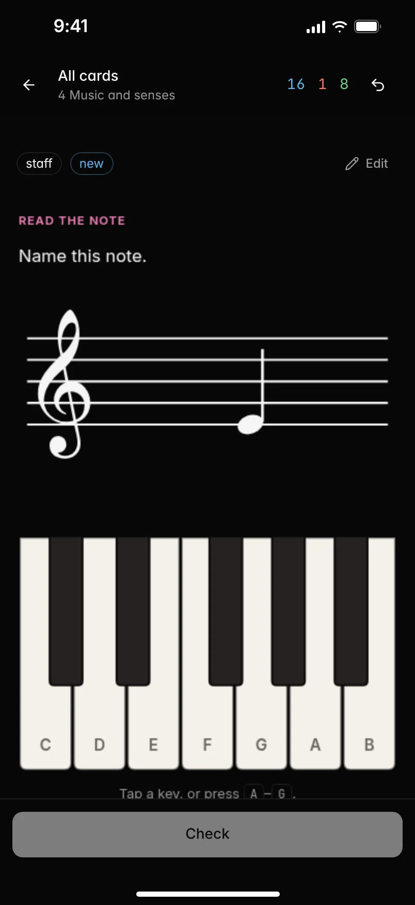
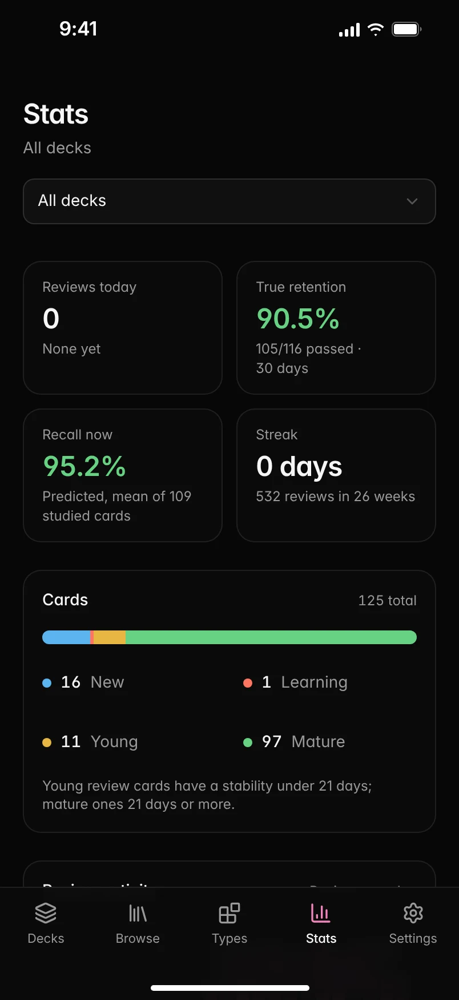

étude, n. a piece written to practise a skill
Practice anything.
Every card type is a small program. Compute, drag, play, draw or prove, and let a script or AI check your answer.
Endless card types, write your own · FSRS-6 · MIT · runs on your own computer
Overture two minutes, sound on
Prelude why it exists
Learning has always been a big part of my life, and I've always looked for ways to make it more effective, and more fun. Apps like Anki and RemNote showed me how powerful spaced practice is. But I kept running into the limits of how flashcard apps work. Making a deck takes a long time, and whatever you want to learn has to fit the format the app gives you: a front and a back.
Etude is my attempt to take that idea further. It isn't really a flashcard app. It's a practice app. The scheduling stays, but a card can be a chess position, a chord, a proof or a piece of code, checked the way it should be. And every part of it can be extended, swapped or rewritten, so the app bends around what you're learning instead of the other way around.
It's also my take on what learning should put first: systematic practice. A lot of people treat learning as something a bit mystical, as if some people just get it and you have to be smart to memorize things. I don't think that's true. Most of it is memory and repetition: practice.
That's why I'd like Etude to be used by students, by schools, and by anyone who wants learning to be easier. Its whole point is to show that your mind can do a lot more than you think, once you give it the right system.
No. 1 on flipping cards
Most of what you study is something you do.
Classic flashcards show a front, you think of the back and grade yourself. That works for vocabulary. But a course asks you to compute, derive, trace an algorithm and explain why, and a card should ask the same.
| Classic flashcard apps | εtude | |
|---|---|---|
| A card is | a front and a back | a program: template, script and grader |
| Graded by | you | you, a script, AI, or a script that hands hard cases to AI |
| Calculations | the same numbers every time | a new variant every review |
| Open answers | you compare with the back | an AI verdict and a few sentences on what was missing |
| Math | shown, never checked | typed with live rendering, graded by equivalence |
| Exam dates | ignored by the intervals | every card comes back before the exam |
| Automation | add-ons, or editing the database | every action is a CLI command with JSON output |
No. 2 on being corrected
Every answer gets checked the way that suits it.
Each card type picks its grader. Grading instructions stack from the item's rubric through its tags, decks and type, so the grader knows what your course expects.
selfYou rate it- For plain recall: show the answer, pick Again, Hard, Good or Easy.
scriptCode checks it- Numbers within a tolerance, math by equivalence, chess moves against the engine, with partial credit.
aiAI reads it- Open answers and drawings get a verdict and a few sentences on what was missing.
hybridBoth- A script decides what it can and hands the rest to AI. Code cards run hidden tests.
No. 3 variations on a theme
New numbers every review, so you learn the method.
Give an item a generator and it stops repeating itself. The seed is saved with each review, so any variant can be brought back exactly.
generatorshowcase.math.derivative
What the learner seesseed
No. 4 against the clock
Your exam date is part of the schedule.
Spaced repetition will happily push a card you know to after your exam. Give the deck a deadline and nothing is scheduled past it: every card comes back for one more look before the day.
One card learned on day 0 and answered Good at every review, studying at 5 pm, exam at 9 am. The curve is the predicted chance you'd recall it. The deck figure is 40 cards learned over the first 60% of the time. Computed live in your browser with the real FSRS-6 scheduler (ts-fsrs) and Etude's deadline rule.
Tempo how a card comes back
Each deck keeps its own time.
FSRS is the default: a card comes back right before you'd forget it. But a typing test or a game of Flippy Bit has nothing to forget. You want to play it every day and watch the number go up. So a deck can switch to a drill, to Leitner boxes, or to a few lines of JavaScript you write.
One card over six weeks, answered right every time, except one miss.
Each row runs the real scheduler in your browser: FSRS-6 through ts-fsrs, and the drill and leitner scripts that ship with Etude. The last row is the example from docs/schedulers.md.
The real Stats panels, running on a demo collection: 53 typing runs, each scored by the typing card's own grade script.
No. 5 the record
See what you know, and what's about to slip.
Every review feeds the same FSRS model that schedules your cards, so Stats can tell you more than a streak: how much you'd remember if you stopped today, which tags are slipping and when in the day you study best.
No. 6 for four hands
Your agent can use it too.
Every action in the app is also a command with JSON output. Give an agent your notes and it can write the deck, set the exam date, quiz you in a chat and read back what you keep missing.
- One file per deck
- A pack carries decks, presets, tags, card types and items. Importing it again updates in place and keeps review history.
- A catalogue it can read
etude commandslists every command with its arguments, flags, examples and whether it writes.- A skill to drop in
- The repo ships a skill file that teaches an agent the whole workflow, from writing a pack to finding weak cards.
agent sessionrecorded with real commands
Transcription from Anki
Bring your Anki decks, history included.
Import an .apkg or a whole .colpkg collection and keep going where you were. Your notetypes, styling, media and review history come across, and FSRS carries on from Anki's memory state instead of starting you over.
- Notetypes
- become card types, with their templates and CSS
- Notes and cards
- become items and cards, one per template or cloze
- Review log
- keeps every review with its original date and rating
- FSRS state
- stability and difficulty carry over as they were
- Media
- images, sounds and fonts are copied into your collection
- Decks and tags
- keep their
::hierarchy and deck options
$ etude anki import "Ultimate Geography.apkg" 319 notes · 978 cards · 546 media files
Or press Import on the Decks page. Import again later and it updates in place without duplicating anything. Re-importing never overwrites progress you made in Etude. What comes across, and what doesn't

Suite new in the market
Learning the map? Name the country that's lit up.
Three new decks, each with a card type that couldn't be a front and a back. They're the real cards from the Market, running here. Tap the map, explore the table, play the game.
Ensemble the market
Card types, decks and themes, shared by the people who use them.
The Market tab browses a public catalogue on GitHub. Try a card type live before you install it, install a deck with its types in one click, or pick a theme. When you make something good, Publish opens a pull request for you.
No. 7 quietly
A calm, keyboard‑first app on your own computer.
Open it in a browser, or on your phone over your own network. There's nothing to sign up for.











No. 8 open score
Every card type is a folder of code you can read.
A template, a stylesheet, a script for the card and optional scripts that prepare and grade it. The included types are written exactly this way, so you can open one, copy it and make it yours, in the app with a live preview or in your own editor.
Intermezzo the repertoire
Infinite ways to ask a question.
Every type that ships with Etude, running here as it runs in the app. Pick one, answer it and press Check: the card's own script grades it in your browser. The two that AI grades show you the reference answer instead.
No. 9 the accompaniment
And the parts a study app should have.
- FSRS-6 scheduling
- Learning steps, fuzz, daily limits, ordering, sibling burying, a suggested rating from the grade, undo, and replaying history after you change a setting.
- Settings that inherit
- A preset on
Physicsapplies toPhysics::Wavesunless that deck overrides it. Deadlines too. - A search language
deck:Physics is:due prop:lapses>=2works in Browse, in filtered study sessions and in the CLI.- Statistics
- True retention, predicted recall now, a review heatmap, recall per tag and the forecast up to your deadline.
- Phone, tablet, embed
- Layouts made for phones, a token for your network, and a compact
/embedview that fits inside other apps. - Themes
- Built-in light and dark themes, or your own with CSS variables. Cards follow the theme.
- Decks that are safe to share
- Card code runs in sandboxed frames and server scripts in QuickJS, so a pack from someone else can't touch your data.
- AI only if you want it
- Off until you turn it on. Continue with ChatGPT, bring a key for OpenRouter or OpenAI, or point it at a local llama.cpp or Ollama.
- Math and code that render
- Answer fields are live Markdown editors:
$math$and code blocks render as you type, with highlighting for about 140 languages.
Practice that checks your work.
Free and open source under MIT. It runs on your own computer, and your collection stays there unless you turn on AI grading.
Etude is made by one person in his free time. If it helps you, buy him a coffee on Ko-fi.